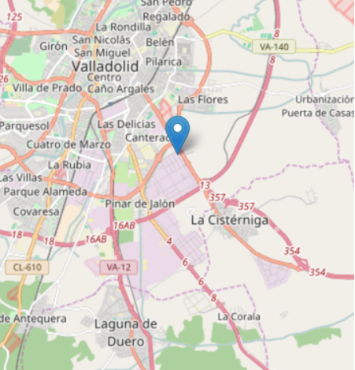

<ion-content [fullscreen]="true">
  <!-- Sección del mapa (puedes integrar un mapa interactivo como Google Maps API) -->
  <div class="map-section">
    <!-- Aquí podrías colocar una imagen de un mapa o un componente de mapa interactivo -->
    
  </div>

  <!-- Controles de selección de viaje pegados abajo -->
  <div class="trip-controls">
    <!-- Pasajeros -->
    <div class="control-item">
      <label for="passengers">Pasajeros:</label>
      <button class="control-button">-</button>
      <span id="passenger-count">1</span>
      <button class="control-button">+</button>
    </div>

    <!-- Hora -->
    <div class="control-item">
      <label for="time">Hora:</label>
      <input type="time" id="time" value="00:00" class="control-input">
    </div>

    <!-- Precio -->
    <div class="control-item">
      <label for="price">Precio:</label>
      <button class="control-button">-</button>
      <span id="price-amount">1000</span>
      <button class="control-button">+</button>
    </div>
  </div>
</ion-content>
